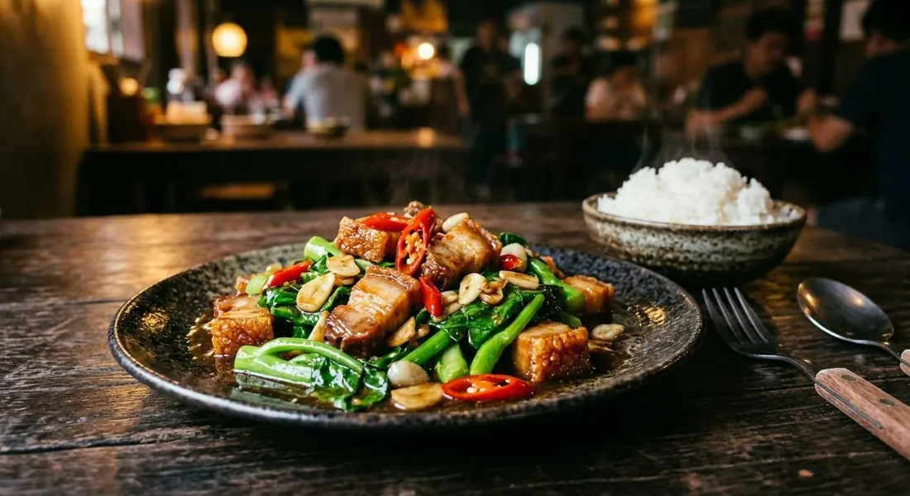

Chinese broccoli through a screaming wok with garlic and chillies, oyster sauce gloss — then the crackling folded in at the last second so it stays loud. The dish every rice-and-dishes shop knows.

คะน้าหมูกรอบ is อาหารตามสั่ง — the cooked-to-order dishes of Thailand's rice shops — and the Aroifin source opens with exactly that: "กับข้าวยอดฮิต", the side dish everyone orders. It is a two-texture machine: คะน้า, Chinese broccoli, flash-fried so the stems stay crisp and the leaves take the sauce, and หมูกรอบ, crispy pork belly, whose crackling must survive the wok.
That survival is the dish's one rule, and the TrueID source states it as an order: put the pork in last, stir once or twice, and lift out immediately — "ผัดแค่ 1-2 ครั้งแล้วตักขึ้นทันที" — because pork that sits in the sauce softens, and soft pork is a different, sadder dish. Everything else happens before the pork arrives: garlic and chillies pounded coarse, fried to fragrance, the greens tossed through oyster sauce and fish sauce with a splash of water to keep the salt civil.
The other fork in the road is the pork itself. Aroifin's recipe makes the moo krob from scratch — belly boiled, skin pricked, dried, fried to crackling — a fifty-five-minute project. The TrueID and Kapook versions buy it, because in Thailand every market stall sells it by the slab. The stir-fry itself is ten minutes either way.
| Thai | English | Amount |
|---|---|---|
| คะน้า | Chinese broccoli (kana) | 400 g |
| กระเทียม | Garlic | 20 g |
| พริกแดงจินดา | Red Jinda chillies | 10 g |
| หมูกรอบ | Crispy pork belly | 150 g |
| ซอสปรุงรส | Seasoning sauce | 2 tbsp |
| พริกไทยป่น | Ground pepper | to taste |
| น้ำเปล่า | Water | 3 tbsp |
To make the moo krob from scratch (Aroifin): wash the belly and pull any hairs; boil until cooked; prick the skin all over; dry it thoroughly; fry or roast until the skin crackles — about 55 minutes. Or buy it ready-made, as the other sources do.
Make or buy the pork. Aroifin makes moo krob from scratch (55 minutes: boil, prick, dry, fry). TrueID and Kapook assume you bought it — the market-stall reality. The stir-fry is identical.
The sauce. Aroifin seasons with seasoning sauce alone; TrueID uses oyster sauce plus fish sauce; Kapook goes oyster sauce, tao jiao fermented soybean and sugar. All converge on savoury-sweet gloss.
Tao jiao. Kapook's teaspoon of fermented soybean paste is its own signature; the other sources never mention it. It deepens the sauce toward the rice-shop flavour.
The Kapook speed trick. Kapook pre-mixes greens, pork, chilli, garlic, sauces and sugar in one bowl, then flash-fries for thirty seconds. It sacrifices the "pork last" rule to speed — and admits the pork goes in with everything else.
Chilli heat. TrueID's version is "เผ็ดนำ" — chilli-led. Aroifin's ten grams of Jinda chillies is a background warmth. The dish slides from "with chillies" to "chillies with greens" by household.
This recipe is translated from the following Thai-language sources. Where they disagree, we've said so.
1. Aroifin — "วิธีทำ คะน้าหมูกรอบ กับข้าวยอดฮิต ให้ผักเขียวสด หมูกรอบอร่อยเคี้ยวมัน" (the version used here, with the from-scratch moo krob method) — aroifin.com
2. TrueID — "แจกสูตรเมนูทำง่าย ผัดคะน้าหมูกรอบ เผ็ด เข้มข้น อร่อย" (oyster sauce and fish sauce; the pork-in-last, one-or-two-stir rule) — food.trueid.net
3. Kapook — "คะน้าหมูกรอบ อาหารไม่ต้องสั่งลองทำเองง่าย ๆ" (the thirty-second pre-mixed version with tao jiao) — cooking.kapook.com
4. Wongnai (ImAiw) — "คะน้าหมูกรอบ" (home version, 1.4K reads) — wongnai.com